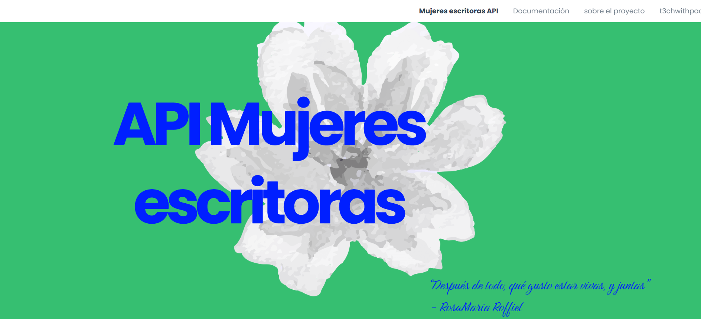
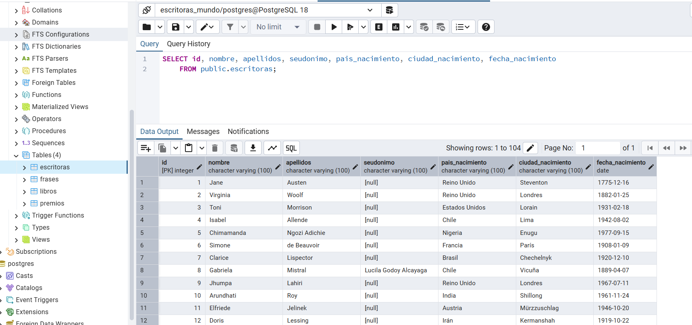

API recopila que más de 100 mujeres escritoras en todo el mundo, a sus creaciones, obras, poemas, libros.
Ver proyecto ★

Este proyecto formó parte de mi serie "Una cosas creativa al mes" y para el mes de marzo decidí crearla.
Cuando en la universidad descubrí el concepto de las APIs me encantó la idea y también base de datos fue de mis materias favoritas, entonces decidí crear un repositorio con información de escritoras mujeres por todo el mundo.
Este proyecto nace de la fuerza y la pasión de las mujeres, de su amor, de su lucha, del tiempo que pasaron silenciadas y de crear a pesar de...
Cuenta con 4 secciones:
- Escritoras que lista toda la información de las escritoras como su nombre, país de nacimiento, fecha, nacionalidad
- Frases: Libro donde se ubica la frase, la frase e información adicional
- Libros: Título, Año de publicación, género y más información
Me gustó mucho poder crear algo así, los endpoints como GET o filtros te ayudan a que puedas consumir la API.
La Agencia Digital de Inovación Píblica de la Ciudad de México (ADIPCDMX) compartió mi proyecto en sus redes sociales>
Utilicé un agente de IA en colaboración con Verdent para poder crear la base de datos, ya que considero que este proceso sería el más tardado, una vez que me generó la base de datos valide y verifiqué la información para que todo estuviera correcto.
Cree mi base de datos en PostgreSQL e hice un deployment a través de Railway